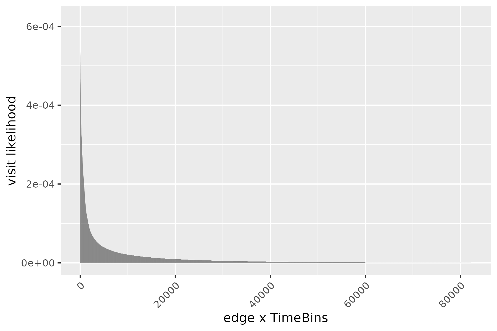
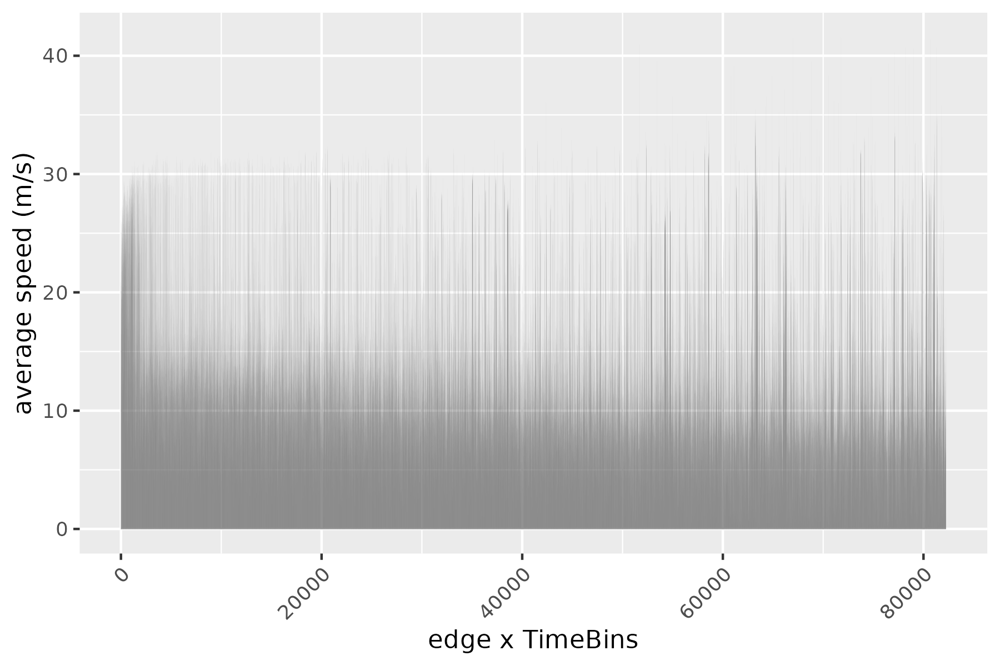
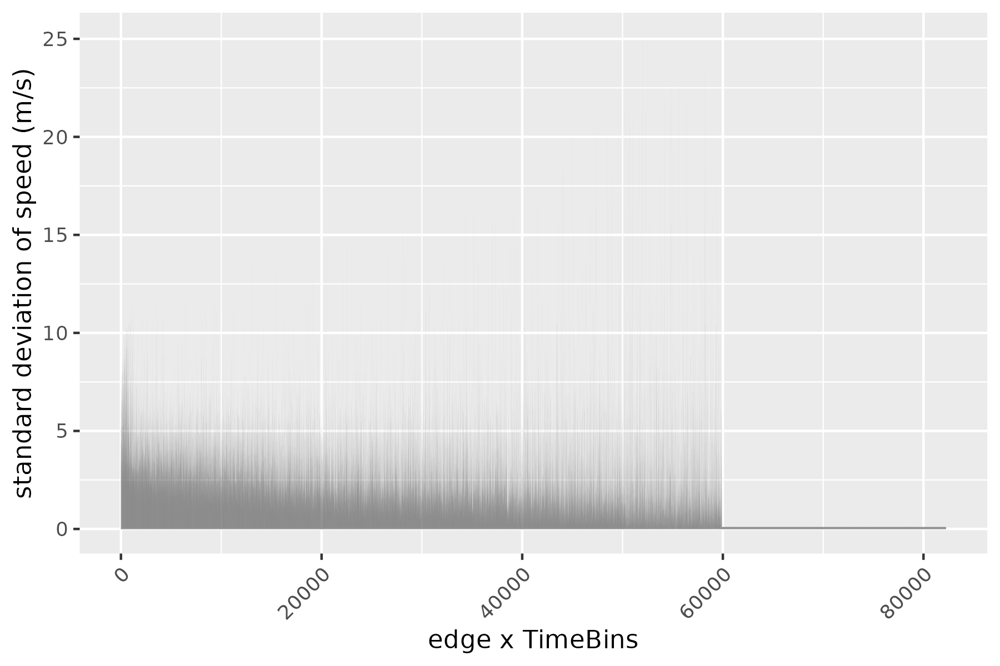
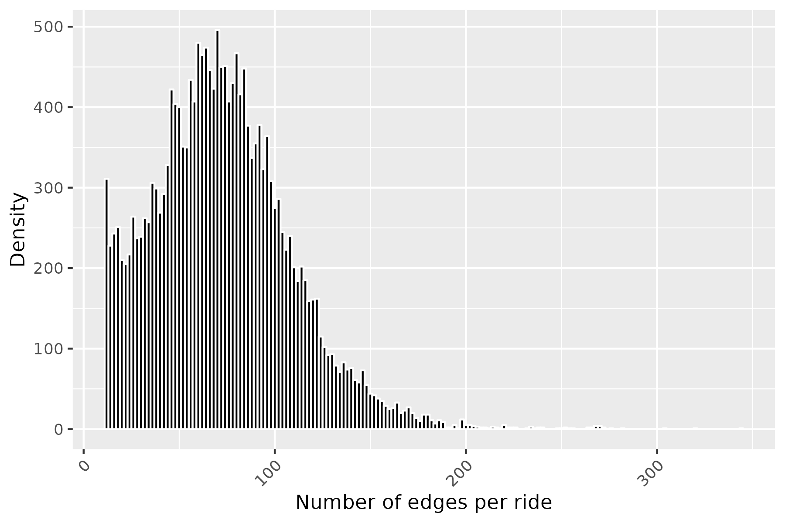
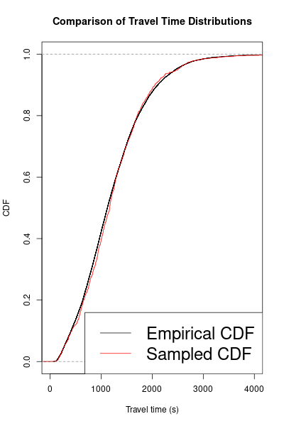

vignettes/sample_ride.Rmd
sample_ride.RmdHave you ever wondered how ride-share apps always seem to know the fastest route, even during rush hour? It’s not just about GPS – they use complex maps of roads and traffic patterns. But what if we want to study rides and traffic without needing such detailed real-world maps?
Transportation systems depend on physical infrastructure like roads. Ride-share providers (Lyft, Uber, Careem) and autonomous vehicles (Waymo, Zoox, Nuro) operate using these maps (known as road-graphs). For some research, we’d rather focus on ride patterns themselves. Can we sample rides in a way that captures their statistical properties without simulating an entire road network?
Following Elmasri et. al. (2020), this blog post explores a method to sample rides while preserving key statistical patterns – no complex road maps needed.
Traffic simulators, like SUMO are constructed as a physical system as well. In such, one sampler are ride by generating a road-graph, configuring the traffic density flow, and then a ride is defined by the tuple (start time, origin, destination). Origin and destination are defined on geo-locations (i.e., latitude/longitude). The system samples a path and return the travel time of the ride and the sampled path.
To create a sampler that doesn’t rely on a detailed road map, we first need to understand how rides are typically distributed in a transportation system. Let’s break this down:
Populations of Interest: We’re interested in three scenarios:
Ride Frequency (\(\Pi\)): We need to track how often different roads (or ‘edges’) are used throughout the day or week. Think of this like knowing which streets are busiest during rush hour. Here \(\Pi = \{\pi_{it}\}\) is the set of weights for each edge \(i\) at time \(t\). Time can be decomposed into buckets, for examaple, 168 hour of week.
Modeling Speed (\(F_i(s, t)\)): Traffic speed isn’t constant. We’ll use a cumulative distribution function to model how likely it is to encounter a certain speed on a given road at a given time.
Distribution of distance: to sampler rides that mimick real-world network, we need to know the distribution of distance of rides on the netowrk.
\[ \begin{align*} t_0 & = \textsf{start time} \\ n & \sim \textsf{number of edges, or route lentgh}\\ \textsf{route } r = \langle i_0, i_2 \dots, i_n \rangle & \sim \Pi \\ (U_0, U_1, \dots, U_{n}) & \sim \textsf{{dependent}-Uniform}[0,1] \\ S_{i_k} & \sim {F_{i_k}^{-1}(U_k, t (i_k))},\quad t(i_k) \textsf{ is the time bin } i_k \textsf{ falls into} \\ \end{align*} \]
Travel time is then simply \[ T_r = \sum_{k=0}^{n} d_{i_k}/ S_{i_k}. \]
Ideally you want have the access to a family of distribution \(\{F_i(\cdot, \cdot)\}\), for the sake of simplicity, and since travel time \(T_r\) is a sum (i.e., central limit theorem applies), we will use
\[ S_i = \exp\{ \mu_i + \sigma_i * \Phi^{-1}(U_i)\} \]
where \(\Phi\) is the standard normal CDF, and \(\mu_i\), \(\sigma_i\) is the mean and standard deviation of log-speed (since speed is skewed) on the edge. For simplicity, the time index was removed.
We will implement a simple auto-regressive strucutre, and use an exact sampler proposed by Falk (2007).
library(mvtnorm)
set.seed(1)
dependent_uniform<-function(n, rho=0.31) {
S <-diag(n)
for (i in 1:n) {
for (j in 2:n) {
S[i, j] <- rho^(abs(i-j))
}
}
S = S +t(S)
diag(S)<-1
St = 2 * sin(S * pi/6) # must be positive definite
U = c(pnorm(rmvnorm(1, sigma = St)))
U
}
U = dependent_uniform(5, 0.3)
acf(U, lag.max=2, plot=FALSE)
#>
#> Autocorrelations of series 'U', by lag
#>
#> 0 1 2
#> 1.000 0.310 -0.116Taking the trips dataset associated with traveltimeCLT, we compute the required quantities of the sampling framework above, that is \(\Pi\), \(\{F_i(\cdot, \cdot)\}\), and the distribution of distance. All quantities are plotted below.


To evaluate our graph-independent sampler, we compared the empirical CDF of the trips dataset to 1000 rides sampled from the above framework. Surprisingly, despite using only summarized information and not the road graph itself, the two CDFs show a remarkably close fit. This demonstrates the sampler’s ability to replicate travel time distributions even when edges might be disconnected in reality or sampled from different time periods.

Traffic can feel unpredictable and chaotic when you’re stuck in it. Yet, from a broader perspective, patterns emerge. How does this random movement become statistically predictable when we zoom out?
Traffic systems are approximately ergodic. This means that even though individual drivers make unpredictable choices, when we observe the system over a long enough time or in a large enough area, stable patterns emerge. This regularity is similar to how individual plants in a forest may grow haphazardly, but the overall forest has a predictable structure. Cities operate on a collective rhythm – individual trips may differ, but overall patterns become evident.
One can adapt the framework above to respect the road-graph. In this sense, the edges of the rides actually resemble a true route.
Given a fixed start time \(t_0\) and route \(r\), the sampling framework is as follows: \[ \begin{align*} t_0 & \sim \textsf{start time} \\ \langle 0, 1 \dots, n \rangle & \sim \textsf{route } r \\ (U_0, U_1, \dots, U_{n}) & \sim \textsf{{dependent}-Uniform}[0,1] \quad (\text{mixing as in } \alpha-\text{mixing})\\ S_0(t_0) & \sim {F_0^{-1}(U_0, t_0)}, \\ S_i(t_i) & \sim { F_i^{-1}(U_i, t_i)} \quad i = 1, \dots, n\\ {t_i} & { = t_{i-1} + d_{i-1}/S_{i-1}(t_{i-1})} \\ T_r & = \sum_{i=0}^{n} d_i /S_i(t_i) \end{align*} \]
Let me know if you have tried it.